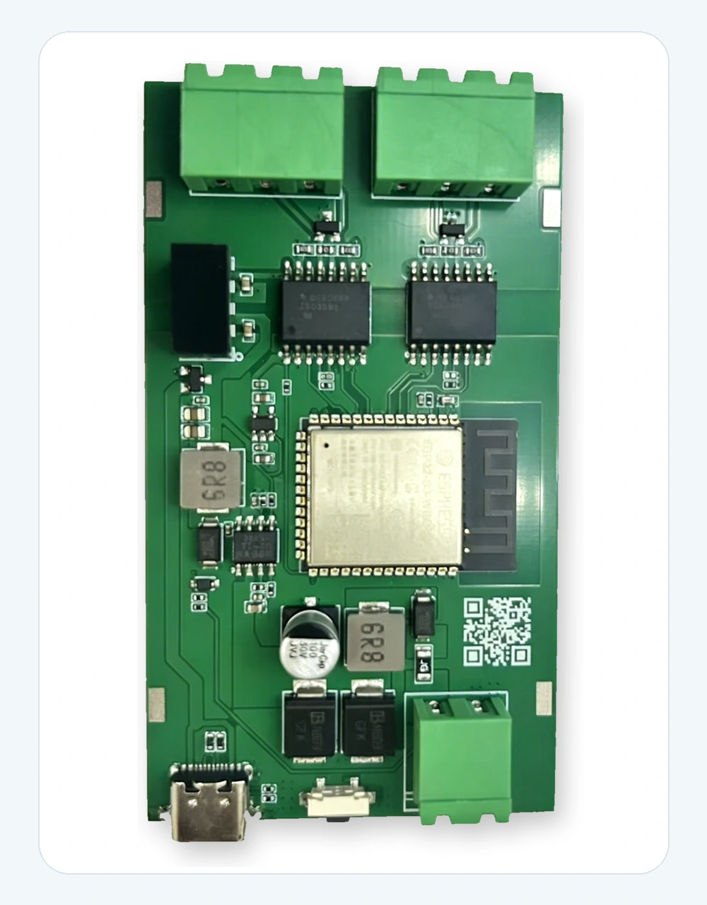
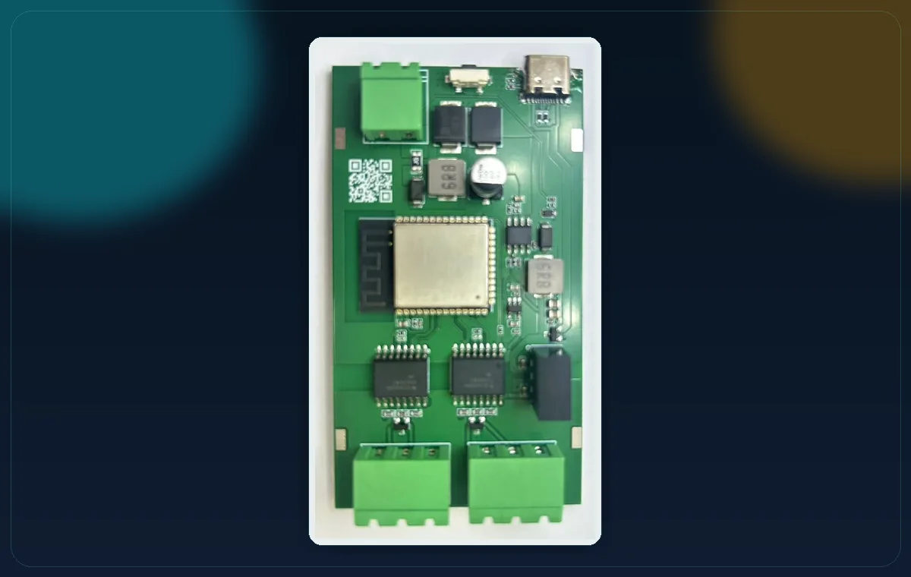

RS485 産業機器接続
センサー、メーター、PLC 関連モジュール、コントローラ、産業データ端末などの RS485 機器に接続できます。



センサー、メーター、PLC 関連モジュール、コントローラ、産業データ端末などの RS485 機器に接続できます。
RS485 データを MQTT メッセージに変換し、ローカル broker、ダッシュボード、クラウド、産業 IoT システムへ送信できます。
USB-C は電源入力、ファームウェア書き込み、シリアルデバッグ、MQTT 設定、開発作業に使えます。
RS485 バス信号、電源入力、現場実験の配線を容易にします。
RS485 通信、Wi-Fi 送信、産業データアップロード試験の安定動作を支えます。
回路図、PCB ソース、BOM、Gerber、CPL、MQTT 例、RS485 ポーリング例、試験メモの公開を推奨します。